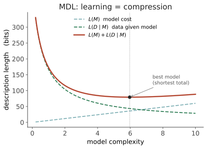

本页目录
信息 IV · 三种压缩与它的边界
对标：Solomonoff 归纳、Rissanen MDL、Li & Vitányi《Kolmogorov Complexity》、Hutter《Universal AI》、Bialek 预测信息 ｜ 前置：info-01~03 ｜ 证据地位：压缩=预测【实】（数学等价），压缩=意义【思/争】（本页要划的分水岭）。 这是线二的收官，也是全课的一个枢纽。它把"预测下一符号""从数据学习""理解意义"三件事放到一个词底下审问——压缩——然后指出：前两者与压缩几乎是同一件事，但第三者不是。认清哪里等价、哪里断裂，是分开甲问与乙/丙问的关键一刀。
1. 预测就是压缩（这不是比喻）
核心等价：一个好的预测器 = 一个好的压缩器。原因是算术编码：若你有下一符号的概率分布 \(P(w_i\mid w_{<i})\)，就能把该符号编码成约 \(-\log_2 P(w_i\mid w_{<i})\) bits（info-02 的 surprisal 又出现了）。整段文本的编码长度：
所以：预测得越准（概率给得越对）→ 编码越短 → 压缩率越高。 训练语言模型最小化交叉熵（info-01 §3），逐字节等价于训练一个最优文本压缩器。这不是类比——顶尖文本压缩榜（如 Hutter Prize、enwik9）的冠军就是语言模型。"预测下一个词"和"压缩维基百科"是同一个优化问题的两种说法。
这是甲问的数学核心：为什么"预测下一符号"能长出能力？因为要把海量文本压到极致，你被迫在模型里建起产生这些文本的规律——语法、事实、推理链、世界的结构。压缩是逼迫理解的杠杆（这是假说的乐观版，§5 会给它划边界）。
2. 三种压缩（把"压缩"分层）
"压缩"在本课有三个层次，混淆它们会出大乱子：
压缩一 · 编码压缩（coding）——给定分布，用最少 bits 表示符号。裁判：香农熵（info-01）。这是纯【实】，Shannon 已封顶。
压缩二 · 模型压缩 / 学习即压缩（MDL）——不只压数据，还要把生成数据的规律本身压短。Rissanen 的最小描述长度（MDL）原则：

MDL = 奥卡姆剃刀的数学化：最好的理论是"规律 + 残差"总编码最短的那个。学习一门语言的语法，就是找到能把语料压得最短的规则集——这直接对接可学习性之争（线三 mean-02）：先天偏置 = 更短的 \(L(M)\) 先验。压缩二是本课"学习"的统一语言。
压缩三 · 语义压缩（semantic / grounded）——把符号压到关于世界的模型，使符号能指涉、能支持推断与行动。这一层没有干净的裁判——它需要"意义""指涉""世界"，而这些还没有被形式化。§4 是它撞墙的地方。
3. 极限：Kolmogorov 复杂度与不可计算
把"压缩到极致"推到理论尽头，就是 Kolmogorov 复杂度 \(K(x)\)：生成字符串 \(x\) 的最短程序的长度。它是"\(x\) 的绝对信息量 / 内在规律性"的终极度量——一个字符串越规律，\(K\) 越小；纯随机串 \(K\approx |x|\)。
Solomonoff 归纳把它变成"完美预测器"：对所有可能程序按 \(2^{-\text{长度}}\) 加权预测下一符号——理论上最优的通用归纳（Hutter 的 AIXI 以此为核心）。这给了"预测=压缩=智能"一个理论顶点：最聪明的预测器就是最强的压缩器。
但有一堵墙：\(K(x)\) 不可计算（不可判定，源自停机问题，🔗 cs toc-01）。没有算法能对任意 \(x\) 求出其最短程序。后果： - 完美压缩/完美归纳是理论理想，实际不可达；一切真实系统（人、LLM）都在用受限、次优的近似（特定架构 = 特定的可表达程序类 + 可行搜索）。 - "智能=压缩"因此不是一个可直接执行的配方，而是一个方向。真正的问题从"能不能完美压缩"变成"在算力与架构约束下，哪种归纳偏置压得更好"——这才是 scaling、架构设计、乃至人脑演化的战场（线六）。
4. 边界：压缩不等于意义（分水岭）
现在划全课最重要的一条线。前面说"压缩逼迫理解"——在什么意义上成立，在什么意义上不成立？
成立的部分（甲）：要压缩文本，必须建模文本内部的统计与结构规律——语法、搭配、常识关联、推理模式。这些是真实的、可提取的（线六 probing、Othello-GPT 证明模型里确有结构化表征）。所以"压缩 → 结构/能力"这一步，有实证支撑。
断裂的部分（乙/丙）：压缩的目标是重建符号序列，不是关于世界为真。一个系统可以完美预测"糖是甜的"这串符号的分布，而从未尝过甜、其内部符号也不真正指涉外部的糖。
- Bender & Koller 的"章鱼"论证（线三 mean-03 详讲）：只见符号形式、从不接触指涉物的学习者，学到的是形式的分布，不是意义（form ≠ meaning）。
- 压缩的度量里没有"世界"：交叉熵只惩罚"符号预测错"，不惩罚"关于世界错"。若语料本身错了，完美压缩器会忠实地压缩错误。
- 这正是压缩一/二 与 压缩三 的裂缝：一、二有裁判（bits），三没有（需要"指涉正确"这个信息论管不着的判据）。
所以本课的分档： - "预测/学习 = 压缩" —— 【实】，甲问的引擎。 - "压缩 → 一定程度的结构与能力" —— 【实】，有实证。 - "压缩 = 理解 / 意义 / 关于世界为真" —— 【争/思】，这一步需要接地（线三 mean-03）与世界模型的实证（线六 ai-01/02），不能靠信息论白拿。
5. 预测信息：不是压缩多少，而是压缩里有多少"关于未来"
最后一个前沿工具（Bialek–Tishby–Crutchfield 的预测信息 / predictive information）：序列中，过去保存了多少关于未来的信息——
它区分了两种"信息"：能预测未来的结构 vs 一次性的噪声细节。一个系统的智能程度，也许不在于它存了多少 bits，而在于它存的是可预测未来的那部分 bits（把 §1 的压缩细化为"只压该压的"）。
对你研究的直接价值：这正是 Medusa 预测层想要的量——一个事件/叙事对未来的预测信息含量。信息瓶颈（Information Bottleneck）把它做成可优化目标：在压缩过去的同时最大化对未来的预测——"压缩换预测"的权衡曲线（labs L4）。这是把你的"三道闸门"直觉学术化的信息论母体。（🔗 你的预测森林 / 因果网。）
6. 要点与思考
思考 1（线二给了你什么） 一条从熵到 Kolmogorov 的链：熵（平均难度）→ surprisal（逐词难度、人脑定律）→ 效率律（语言被信道雕刻）→ 压缩=预测（甲的引擎）→ 不可计算（理想的边界）→ 预测信息（该压什么）。这整条链都是【实】或有裁判的——它是你研究里"能站稳脚"的地面。 越过这条线（进入意义、意识），就要换上【争/思】的谨慎。
思考 2（甲与乙/丙的分界就在这页） 甲问（机器为什么行）几乎完全落在压缩一/二的【实】区；乙/丙问（人的智能、意识）要跨过 §4 的裂缝，进入压缩三的未定区。把这条裂缝记牢——全课后半（线三接地、线五心智、线六理解）都是在反复试探这条裂缝能不能被填上，以及用什么填。
思考 3（做得动的） 拿 gzip 和一个小 LM 分别压同一段语料，比较压缩率——你会亲眼看到"更好的语言模型 = 更好的压缩器"（§1）。再故意打乱语料词序，看压缩率如何崩塌——你就测到了"语言的规律性"有多少 bits（labs L4 扩展）。\(\blacksquare\)
线二完，你已握有全课最硬的数学地面。下一线（从语料到意义）走进【争】区：分布假说能把"意义"走到多远？刺激贫乏与统计学习谁赢？符号如何接地？——线一的四传统与线二的信息论，将在这里正面交锋。